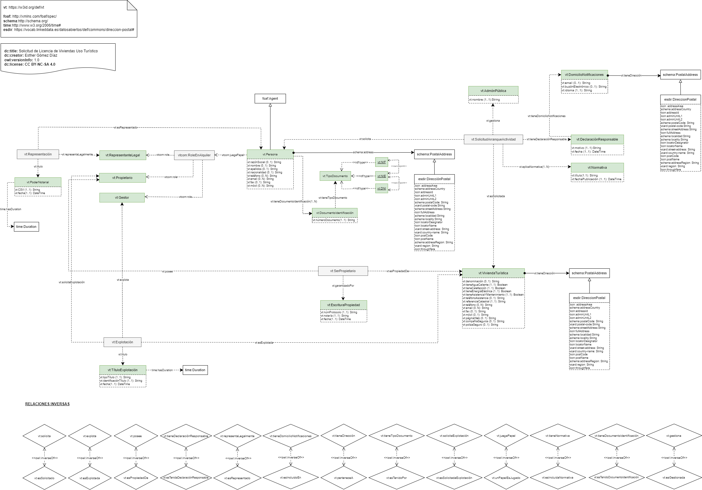

Solicitud de Licencia de Viviendas Uso Turístico: Description back to ToC
El propósito principal de esta ontología (vt) es proporcionar un modelo de
conocimiento consensuado en el dominio del alojamiento turístico que pueda ser
usado por propietarios de alojamientos, gestores, representantes legales y administraciones
públicas. Esta ontología se centra solo en el dominio de las viviendas de
uso turístico, campings, hoteles o apartahoteles poseen su propia normativa en la
mayoría de las comunidades.
